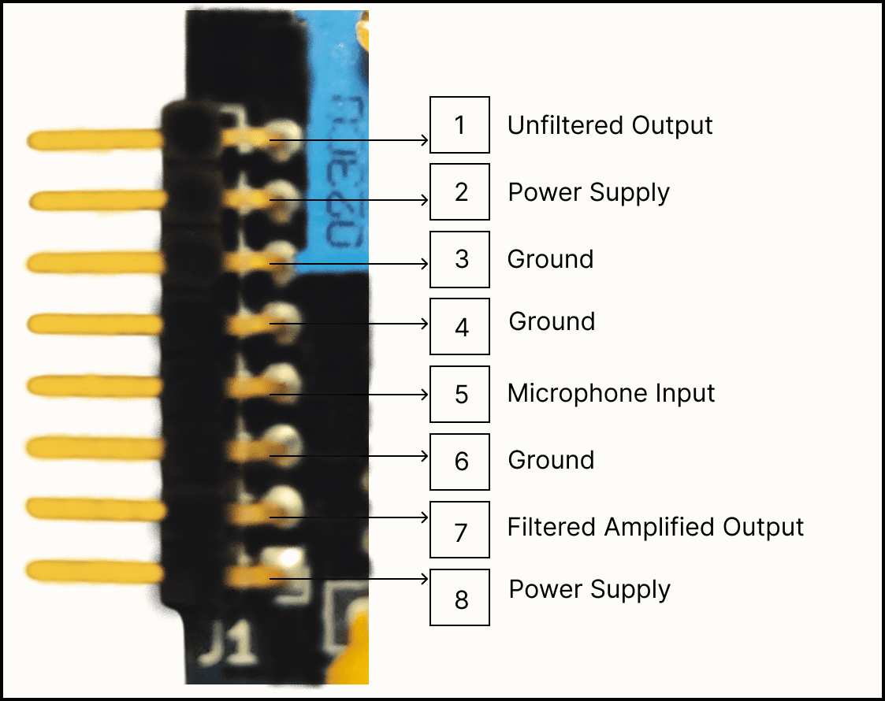
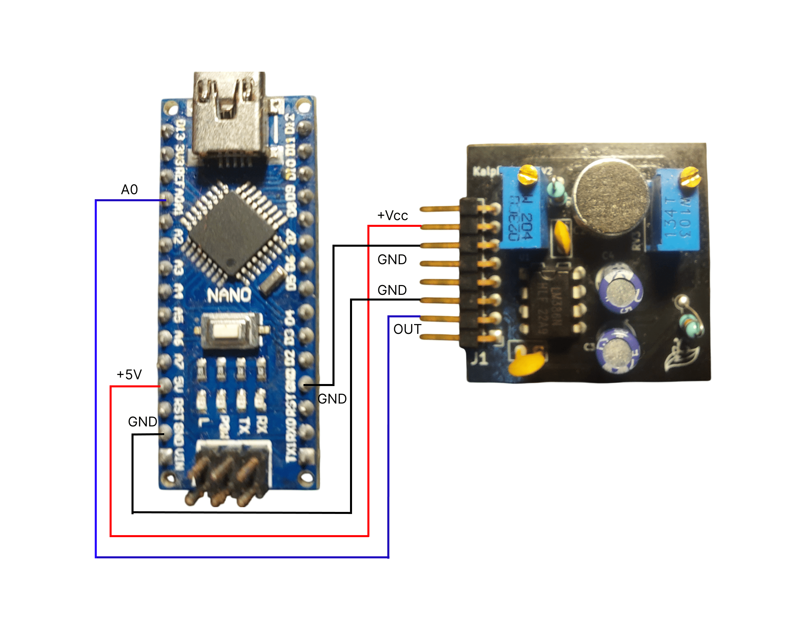
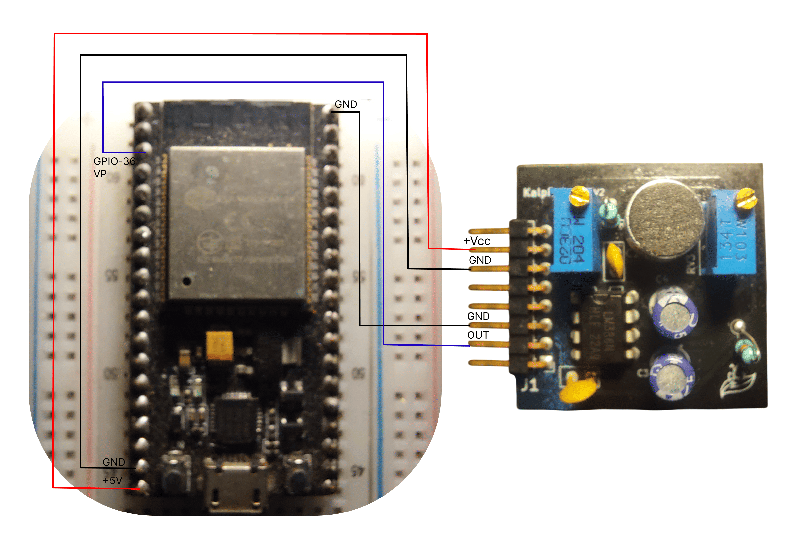

Pin Configuration & Wiring¶
Pin Layout Overview¶
The Kaush Sound Sensor v1.0 features a compact 8-pin interface that provides maximum flexibility for different applications and microcontroller platforms.

Detailed pin layout with electrical specifications
Pin Definitions¶
Power Pins¶
VCC (Positive Power Supply)¶
- Voltage Range: 4V to 12V DC
- Current Draw: 4mA quiescent, 15mA peak
- Recommended: 5V (Arduino) or 9V (battery)
- Protection: ⚠️ Not Reverse Polarity Protected
- Connection: Two power connection pins provided
GND (Ground Reference)¶
- Function: 0V reference and return path
- Connection: Must connect to microcontroller ground
- Important: Single ground point recommended
Signal Output Pins¶
FILTERED_OUT (RC Filtered Output)¶
- Signal Type: Analog, AC-coupled
- Baseline: VCC/2 (Half supply voltage)
- Amplitude: 0.5V to 3V peak-to-peak
- Bandwidth: ~20Hz to 10kHz (-3dB)
- Impedance: <1kΩ output impedance
- Best For: General audio processing, speech recognition
RAW_OUT (Unfiltered Output)¶
- Signal Type: Analog, full bandwidth
- Baseline: VCC/2
- Amplitude: 0.5V to 3V peak-to-peak
- Bandwidth: DC to 20kHz
- Impedance: <500Ω output impedance
- Best For: Maximum signal fidelity, custom filtering
PRE_AMP (Pre-Amplification Signal)¶
- Signal Type: Analog, low amplitude
- Baseline: VCC/2
- Amplitude: 10mV to 200mV peak-to-peak
- Gain: No LM386 amplification applied
- Best For: Low-noise applications, external amplification
Platform-Specific Wiring¶
Arduino Nano Configuration¶
 Complete Arduino Nano connection diagram
Standard Connection¶
Kaush Sensor → Arduino Nano
VCC → 5V
GND → GND
FILTERED_OUT → A0
RAW_OUT → A1 (optional)
PRE_AMP → A2 (optional)
Code Example¶
// Pin definitions
#define FILTERED_PIN A0
#define RAW_PIN A1
#define PREAMP_PIN A2
void setup() {
Serial.begin(115200);
// Analog pins are input by default
}
void loop() {
int filtered = analogRead(FILTERED_PIN);
int raw = analogRead(RAW_PIN);
int preamp = analogRead(PREAMP_PIN);
Serial.print("Filtered: "); Serial.print(filtered);
Serial.print(" Raw: "); Serial.print(raw);
Serial.print(" PreAmp: "); Serial.println(preamp);
delay(1); // 1ms = 1kHz sampling
}
ESP32 Configuration¶
 ESP32 wiring with voltage considerations
ESP32 Connection¶
Kaush Sensor → ESP32
VCC → 5V
GND → GND
FILTERED_OUT → 36
ESP8266 Connection¶
Kaush Sensor → ESP8266
VCC → 3V3(3.3V)
GND → GND
FILTERED_OUT → A0
Voltage Warning
ESP8266 analog input is 0-1V only! Use voltage divider for 3.3V sensor output:
WiFi-Enabled Code Example¶
#include <ESP8266WiFi.h>
#define SENSOR_PIN A0
const char* ssid = "your_wifi_name";
const char* password = "your_password";
WiFiServer server(80);
void setup() {
Serial.begin(115200);
WiFi.begin(ssid, password);
server.begin();
}
void loop() {
int sensorValue = analogRead(SENSOR_PIN);
// Scale from 1024 to compensate for voltage divider
float actualVoltage = (sensorValue / 1024.0) * 3.3 * 1.67;
WiFiClient client = server.available();
if (client) {
client.print("HTTP/1.1 200 OK\r\nContent-Type: text/plain\r\n\r\n");
client.print("Sound Level: ");
client.println(actualVoltage);
client.stop();
}
delay(10);
}
Raspberry Pi Configuration¶
Using MCP3008 ADC (Recommended)¶
Kaush Sensor → MCP3008 ADC → Raspberry Pi
VCC → VDD (3.3V) → 3.3V (Pin 1)
GND → VSS/AGND → GND (Pin 6)
FILTERED_OUT → CH0 →
SCLK → GPIO 11 (Pin 23)
MOSI → GPIO 10 (Pin 19)
MISO → GPIO 9 (Pin 21)
CS → GPIO 8 (Pin 24)
Python Code Example¶
import spidev
import time
# Setup SPI for MCP3008
spi = spidev.SpiDev()
spi.open(0, 0) # Bus 0, Device 0
spi.max_speed_hz = 1350000
def read_adc(channel):
# MCP3008 protocol
r = spi.xfer2([1, (8 + channel) << 4, 0])
adc_out = ((r[1] & 3) << 8) + r[2]
return adc_out
try:
while True:
sensor_value = read_adc(0) # Channel 0
voltage = (sensor_value / 1023.0) * 3.3
print(f"Sensor: {sensor_value:4d} Voltage: {voltage:.2f}V")
time.sleep(0.1)
except KeyboardInterrupt:
spi.close()
Advanced Wiring Configurations¶
Multi-Sensor Setup¶
Stereo Configuration (2 Sensors)¶
Sensor 1 (Left):
VCC → 5V (shared)
GND → GND (shared)
FILTERED_OUT → A0
Sensor 2 (Right):
VCC → 5V (shared)
GND → GND (shared)
FILTERED_OUT → A1
4-Sensor Array¶
#define SENSOR_N A0 // North
#define SENSOR_S A1 // South
#define SENSOR_E A2 // East
#define SENSOR_W A3 // West
void loop() {
int north = analogRead(SENSOR_N);
int south = analogRead(SENSOR_S);
int east = analogRead(SENSOR_E);
int west = analogRead(SENSOR_W);
// Calculate sound direction
float vertical = (north - south) / (float)(north + south);
float horizontal = (east - west) / (float)(east + west);
Serial.print("Direction - V: "); Serial.print(vertical);
Serial.print(" H: "); Serial.println(horizontal);
delay(10);
}
Signal Analysis Connections¶
Spectrum Analyzer Setup¶
Real-Time FFT Monitoring¶
#include "arduinoFFT.h"
#define SAMPLES 256
#define SAMPLING_FREQUENCY 2000
double vReal[SAMPLES];
double vImag[SAMPLES];
ArduinoFFT<double> FFT = ArduinoFFT<double>(vReal, vImag, SAMPLES, SAMPLING_FREQUENCY);
void loop() {
// Collect samples
for(int i = 0; i < SAMPLES; i++) {
vReal[i] = analogRead(A0);
vImag[i] = 0;
delayMicroseconds(500); // 2kHz sampling
}
// Compute FFT
FFT.windowing(FFT_WIN_TYP_HAMMING, FFT_FORWARD);
FFT.compute(FFT_FORWARD);
FFT.complexToMagnitude();
// Find peak frequency
double peak = FFT.majorPeak();
Serial.print("Peak Frequency: ");
Serial.println(peak);
}
PCB Integration¶
Direct PCB Mounting¶
Design Considerations¶
- Ground Plane: Continuous ground under sensor
- Power Filtering: Local bypass capacitors (0.1µF, 10µF)
- Trace Width: Minimum 0.2mm for signals, 0.4mm for power
- Keepout: Avoid switching signals near analog traces
Schematic Symbol¶
Kaush_Sound_Sensor_v1.0
┌─────────────────────────┐
VCC │1 5 │ PRE_AMP
GND │2 4 │ RAW_OUT
│3 3 │ FILTERED_OUT
└─────────────────────────┘
Testing and Validation¶
Connection Verification¶
Step-by-Step Verification¶
- Power Test: Measure VCC to GND voltage
- Continuity: Verify all signal paths
- Baseline Check: Measure outputs with no sound
- Signal Test: Verify signal changes with audio input
- Noise Check: Monitor for electrical interference
Signal Quality Assessment¶
Acceptable Signal Parameters¶
- Baseline Stability: ±100mV drift maximum
- Signal-to-Noise Ratio: >40dB
- Frequency Response: Flat within ±3dB (100Hz-3kHz)
- Distortion: <5% THD at normal levels
Troubleshooting Wiring Issues¶
Common Problems¶
No Signal Output¶
Check List:
-
✅ Power voltage within 4-12V range
-
✅ Ground connections secure
-
✅ Analog pin configured correctly
-
✅ Potentiometers not at minimum
Noisy Signals¶
Solutions:
-
Use shielded cables for long connections
-
Add ground plane under sensor
-
Separate analog and digital grounds
-
Filter power supply with capacitors
Incorrect Baseline¶
Causes & Fixes:
-
Wrong power voltage → Check with multimeter
-
Poor ground connection → Verify continuity
-
Test with another Kaush unit
Quick Reference Card¶
Pin Quick Reference
VCC: 4-12V DC power input
GND: Ground reference (0V)
FILTERED_OUT: Main analog output (recommended)
RAW_OUT: Unfiltered full-bandwidth output
PRE_AMP: Low-amplitude pre-amplification signal
Need wiring help? Check our video tutorials or troubleshooting guide.